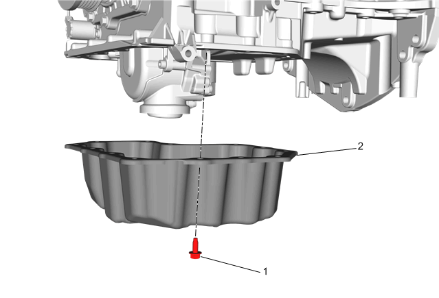

下油底壳的更换
拆卸程序
- 1.排空发动机机油并拆下机油滤清器。排放油和机油滤清器的拆卸
- 2.拆下前舱空气导流器。前舱隔板的更换
-
3.拆下下油底壳紧固件。（1）[13x]
- 4.拆下下油底壳。（2）
- 5.清洁并检查油底壳和配合面。油底壳的清洁与检查
安装程序
-
1.确保室温硬化密封剂(RTV)的正确使用。室温硬化密封胶（RTV）和厌氧密封胶的使用

- 注意:
- • 在涂胶之前，清洁上油底壳和下油底壳的配合面，不可有污染物。
- • 在涂密封胶后的8分钟内，100%拧紧所用螺栓。
- • 在涂密封胶后的8分钟内无法100%拧紧所用螺栓，可先将所有螺栓预拧紧到1牛米以上，然后1小时内100%拧紧所用螺栓。
- 2.绕下油底壳涂上3毫米厚的密封胶胶条。粘合剂、油液、润滑剂和密封胶
- 3.将下油底壳（2）安装并定位至上油底壳上。
- 4.用手初步拧紧所有油底壳紧固件（1）。
-
5.按图示顺序紧固螺栓。告诫：参见有关紧固件的告诫。
- • 第一遍按顺序将螺栓紧固至8N•m(71 lb in)
- • 最后将螺栓紧固至10N•m(89 lb in)
- 6.安装前舱空气导流器。前舱隔板的更换
- 7.加注发动机机油，并安装新的滤清器。排放油和机油滤清器的拆卸